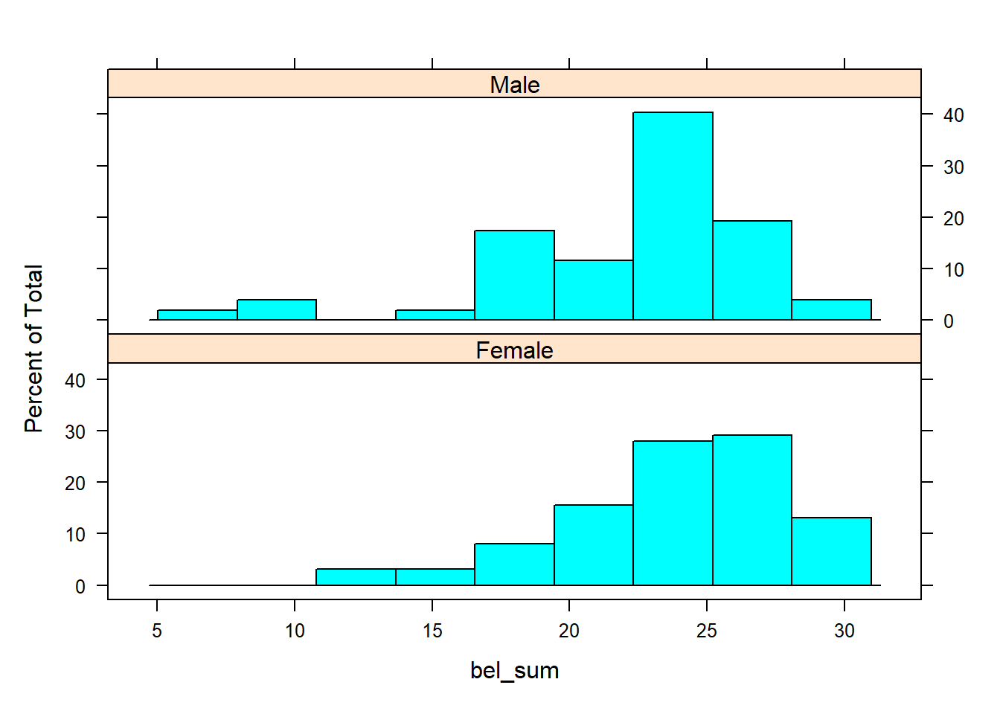
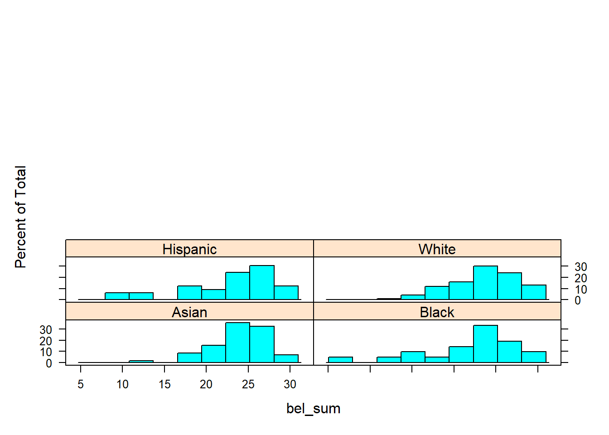

Code
library(tidyverse)
library(psych)
library(lattice)
library(FSA)
library(kableExtra)
knitr::opts_chunk$set(echo = TRUE)library(tidyverse)
library(psych)
library(lattice)
library(FSA)
library(kableExtra)
knitr::opts_chunk$set(echo = TRUE)Many studies exist on how belonging influences in-person students yet there is an absence of literature related to this topic for online learners. This is surprising given that even before the COVID-19 pandemic students studying exclusively online experienced year-over-year growth since at least 2016 (National Center for Educational Statistics, n.d.). High levels of social belonging have repeatedly being found to influence the persistence of in-person students (Fleming et al., 2017; Johnson et al., 2007; Sriram, 2017). With this in mind, the role belonging plays among online students should not be overlooked.
There is no universal definition of belonging, but one way to think about it is a “students’ sense of being accepted, valued, included, and encouraged by others (teacher and peers) in the academic classroom setting and of feeling oneself to be an important part of the life and activity of the class” (Goodenow, 1993). In studies of in-person students, it has been found that not all students experience belonging equally. Some of the student populations that report lower levels of belonging include:
Experiencing a lack of belonging is not innate to these students, though, but rather a reflection of social structural inequalities present in educational systems (Brock, 2019). This reality makes belonging important to explore among students not just generally, but specifically, and is why this study will ask:
How do gender and race influence social belonging of online students?
Literature on how demographics influence the social belonging of online students is elusive making it difficult to develop a hypothesis rooted in previous literature. Therefore, since the data for this study comes from online statistics students, the hypotheses for this study will be based on the notion that underrepresented minorities in STEM experience a lower sense of belonging (Thacker et al., 2022).
According to data from the 2017-2019 American Community survey, fifty percent of employees in STEM jobs were women, yet they are highly concentrated in health-related fields making them underrepresented in many other STEM fields (Fry et al., 2021).
Hypothesis One:
To understand representation in STEM jobs by race it is helpful to examine this table which shows the breakdown of workers in all jobs compared to all STEM jobs (Fry et al., 2021).
race <- c("Black", "Hispanic", "Asian", "Other", "White")
all_jobs <- c("11%", "17%", "6%", "3%", "63%")
all_stem_jobs <- c("9%", "8%", "13%", "3%", "67%")
jobs <- data.frame(race, all_jobs, all_stem_jobs)
kable(jobs, caption = "Employed adults age 25+ in the 2017-19 American Community Survey") %>%
kable_styling("striped")| race | all_jobs | all_stem_jobs |
|---|---|---|
| Black | 11% | 9% |
| Hispanic | 17% | 8% |
| Asian | 6% | 13% |
| Other | 3% | 3% |
| White | 63% | 67% |
Employees who are White make up the majority of workers in STEM, yet employees who are Asian hold more than double the percentage of STEM jobs compared to the percentage of all jobs held by workers who are Asian (Fry et al., 2021). For this reason, it’s hypothesized that students who are Asian are not an underrepresented minority group in STEM and that they will actually report higher levels of belonging than White students.
Hypothesis two:
The data for this study was collected during the last month of the Fall 2021 semester at a large public university in the mid-west of the United States (Jeng et al., 2023). Students were recruited through voluntary response sampling in an online introduction to statistics course and received extra credit for participating in the study. The instructor of this course was not a member of the research team. A total of 240 students completed the survey and responses from 17 students were removed due to either missing demographics, the same rating for every example, or identical response made to more than 50% of open-ended questions. In total, responses from 223 students are included.
The full dataset can be found here.
To answer the research question for the present study, the following variables have been selected. Details on these variables are included in following sections.
genderracebel_1bel_2bel_2_rbel_3bel_4bel_4_rbel_5bel_5_rbel_6Using the above variables, additional variables were created to aid in analysis. These included 6 belonging variables with the data un-coded to show the actual response options and 6 more belonging variables as order factors. The variable bel_sum was also created to create an overall belonging score for each participant.
The responses for gender include “Man” (2) and “Woman or non-binary” (1). The researchers who collected this data explain that their were so few students who identified as non-binary that the sample was too small for a separate analysis (Jeng et al., 2023). What they did do was run all analysis twice, once with non-binary students excluded and once with this group combine with respondents who identified as women. They found their findings to be the same in both instances and therefore choose to combine these two groups. For the purpose of this study, this variable will be coded as “Male” and “Female.”
The response options for race include “Asian or Asian American” (1), “Black or African American” (2), “Hispanic or Latino” (3), “White” (4), and “Other” (5).
A total of 6 Likert questions were asked to measure social belonging which were adapted from Goodenow’s (1993) Psychological Sense of School Membership (PSSM) scale. Five response options (“Not at all true”, “Slightly true”, “Moderately true”, “Mostly true”, and “Completely true”) were provided to students to answer the below questions. Questions 2, 4, and 5 were reversed scored which is why 2 variables exist for each of these questions.
# read in data
belonging_data <- read_csv("_data/belonging_survey_2022-07-08.csv", show_col_types = FALSE)
# tidy data
data <- belonging_data %>%
# filter to include only 1 set of student belonging responses
filter(example_num == 1) %>%
# select needed columns
select(gender, race, bel_1, bel_2, bel_2_r, bel_3, bel_4, bel_4_r, bel_5, bel_5_r, bel_6) %>%
# create variable bel_sum which sums all belonging responses
mutate(bel_sum = rowSums(across(c(bel_1, bel_2_r, bel_3, bel_4_r, bel_5_r, bel_6))))
### Create new variables with Likert scores as an ordered factor
data$f_bel_1 = factor(data$bel_1,
ordered = TRUE,
levels = c("1", "2", "3", "4", "5")
)
data$f_bel_2 = factor(data$bel_2,
ordered = TRUE,
levels = c("1", "2", "3", "4", "5")
)
data$f_bel_3 = factor(data$bel_3,
ordered = TRUE,
levels = c("1", "2", "3", "4", "5")
)
data$f_bel_4 = factor(data$bel_4,
ordered = TRUE,
levels = c("1", "2", "3", "4", "5")
)
data$f_bel_5 = factor(data$bel_5,
ordered = TRUE,
levels = c("1", "2", "3", "4", "5")
)
data$f_bel_6 = factor(data$bel_6,
ordered = TRUE,
levels = c("1", "2", "3", "4", "5")
)
# recode data
data <- data %>%
mutate(gender = recode(gender,
`1` = "Female",
`2` = "Male")) %>%
mutate(race = recode(race,
`1` = "Asian",
`2` = "Black",
`3` = "Hispanic",
`4` = "White",
`5` = "Other")) %>%
mutate(across(bel_1:bel_6,
~ recode(.x, `1` = "Not at all true",
`2` = "Slightly true",
`3` = "Moderately true",
`4` = "Mostly true",
`5` = "Completely true"))) # examine data
describe_data <- describe(x=data) %>%
select(c(vars, n, mean, sd, median, min, max, range))
kable(describe_data) %>%
kable_styling("striped")| vars | n | mean | sd | median | min | max | range | |
|---|---|---|---|---|---|---|---|---|
| gender* | 1 | 223 | 1.233184 | 0.4238096 | 1 | 1 | 2 | 1 |
| race* | 2 | 223 | 3.318386 | 1.7037249 | 3 | 1 | 5 | 4 |
| bel_1* | 3 | 223 | 2.479821 | 1.2148837 | 2 | 1 | 5 | 4 |
| bel_2* | 4 | 223 | 3.829596 | 0.8261619 | 4 | 1 | 5 | 4 |
| bel_2_r* | 5 | 223 | 1.645740 | 1.1605634 | 1 | 1 | 5 | 4 |
| bel_3* | 6 | 223 | 3.094170 | 1.3672858 | 3 | 1 | 5 | 4 |
| bel_4* | 7 | 223 | 3.735426 | 1.0725698 | 4 | 1 | 5 | 4 |
| bel_4_r* | 8 | 223 | 1.973094 | 1.1965389 | 1 | 1 | 5 | 4 |
| bel_5* | 9 | 223 | 3.991031 | 0.7473137 | 4 | 1 | 5 | 4 |
| bel_5_r* | 10 | 223 | 1.488789 | 0.9341421 | 1 | 1 | 5 | 4 |
| bel_6* | 11 | 223 | 2.206278 | 1.1978043 | 2 | 1 | 5 | 4 |
| bel_sum | 12 | 223 | 23.614350 | 4.4846254 | 25 | 6 | 30 | 24 |
| f_bel_1* | 13 | 223 | 3.686099 | 1.0905551 | 4 | 1 | 5 | 4 |
| f_bel_2* | 14 | 223 | 1.565022 | 1.0107690 | 1 | 1 | 5 | 4 |
| f_bel_3* | 15 | 223 | 2.932735 | 1.2979385 | 3 | 1 | 5 | 4 |
| f_bel_4* | 16 | 223 | 1.878924 | 1.0690801 | 1 | 1 | 5 | 4 |
| f_bel_5* | 17 | 223 | 1.381166 | 0.8236397 | 1 | 1 | 5 | 4 |
| f_bel_6* | 18 | 223 | 3.820628 | 1.1756254 | 4 | 1 | 5 | 4 |
str(data)tibble [223 × 18] (S3: tbl_df/tbl/data.frame)
$ gender : chr [1:223] "Female" "Male" "Female" "Female" ...
$ race : chr [1:223] "White" "White" "Asian" "White" ...
$ bel_1 : chr [1:223] "Mostly true" "Slightly true" "Completely true" "Mostly true" ...
$ bel_2 : chr [1:223] "Moderately true" "Slightly true" "Not at all true" "Not at all true" ...
$ bel_2_r: chr [1:223] "Moderately true" "Mostly true" "Completely true" "Completely true" ...
$ bel_3 : chr [1:223] "Mostly true" "Mostly true" "Mostly true" "Mostly true" ...
$ bel_4 : chr [1:223] "Slightly true" "Moderately true" "Mostly true" "Slightly true" ...
$ bel_4_r: chr [1:223] "Mostly true" "Moderately true" "Slightly true" "Mostly true" ...
$ bel_5 : chr [1:223] "Slightly true" "Slightly true" "Not at all true" "Not at all true" ...
$ bel_5_r: chr [1:223] "Mostly true" "Mostly true" "Completely true" "Completely true" ...
$ bel_6 : chr [1:223] "Mostly true" "Moderately true" "Completely true" "Completely true" ...
$ bel_sum: num [1:223] 23 20 26 27 28 24 17 23 25 29 ...
$ f_bel_1: Ord.factor w/ 5 levels "1"<"2"<"3"<"4"<..: 4 2 5 4 4 3 4 3 4 4 ...
$ f_bel_2: Ord.factor w/ 5 levels "1"<"2"<"3"<"4"<..: 3 2 1 1 1 1 4 1 1 1 ...
$ f_bel_3: Ord.factor w/ 5 levels "1"<"2"<"3"<"4"<..: 4 4 4 4 4 5 3 2 1 5 ...
$ f_bel_4: Ord.factor w/ 5 levels "1"<"2"<"3"<"4"<..: 2 3 4 2 1 3 3 1 1 1 ...
$ f_bel_5: Ord.factor w/ 5 levels "1"<"2"<"3"<"4"<..: 2 2 1 1 1 1 2 1 1 1 ...
$ f_bel_6: Ord.factor w/ 5 levels "1"<"2"<"3"<"4"<..: 4 3 5 5 5 3 1 3 5 5 ...# create xtabs and bar plot to visualize variables
# gender
xt_gender <- xtabs(~gender, data = data)
kable(xt_gender) %>%
kable_styling("striped")| gender | Freq |
|---|---|
| Female | 171 |
| Male | 52 |
barplot(xt_gender,
xlab = "Gender",
ylab = "Frequency")
# race
xt_race <- xtabs(~race, data = data)
kable(xt_race) %>%
kable_styling("striped")| race | Freq |
|---|---|
| Asian | 59 |
| Black | 21 |
| Hispanic | 33 |
| Other | 10 |
| White | 100 |
barplot(xt_race,
xlab = "Race",
ylab = "Frequency")
# bel_sum
xt_sum <- xtabs(~bel_sum, data = data)
kable(xt_sum) %>%
kable_styling("striped")| bel_sum | Freq |
|---|---|
| 6 | 1 |
| 8 | 1 |
| 10 | 1 |
| 11 | 2 |
| 12 | 1 |
| 13 | 2 |
| 14 | 2 |
| 15 | 3 |
| 16 | 1 |
| 17 | 8 |
| 18 | 9 |
| 19 | 7 |
| 20 | 7 |
| 21 | 12 |
| 22 | 15 |
| 23 | 19 |
| 24 | 17 |
| 25 | 32 |
| 26 | 21 |
| 27 | 25 |
| 28 | 12 |
| 29 | 12 |
| 30 | 13 |
barplot(xt_sum,
xlab = "Belonging",
ylab = "Frequency")
# f_bel_1
xt_1 <- xtabs(~f_bel_1, data = data)
kable(xt_1) %>%
kable_styling("striped")| f_bel_1 | Freq |
|---|---|
| 1 | 9 |
| 2 | 23 |
| 3 | 55 |
| 4 | 78 |
| 5 | 58 |
barplot(xt_1,
xlab = "I feel like a real part of this class",
ylab = "Frequency")
# f_bel_2
xt_2 <- xtabs(~f_bel_2, data = data)
kable(xt_2) %>%
kable_styling("striped")| f_bel_2 | Freq |
|---|---|
| 1 | 157 |
| 2 | 28 |
| 3 | 20 |
| 4 | 14 |
| 5 | 4 |
barplot(xt_2,
xlab = "Sometimes I feel as if I don’t belong in this class",
ylab = "Frequency")
# f_bel_3
xt_3 <- xtabs(~f_bel_3, data = data)
kable(xt_3) %>%
kable_styling("striped")| f_bel_3 | Freq |
|---|---|
| 1 | 38 |
| 2 | 50 |
| 3 | 55 |
| 4 | 49 |
| 5 | 31 |
barplot(xt_3,
xlab = "I am included in lots of activities in this class",
ylab = "Frequency")
# f_bel_4
xt_4 <- xtabs(~f_bel_4, data = data)
kable(xt_4) %>%
kable_styling("striped")| f_bel_4 | Freq |
|---|---|
| 1 | 112 |
| 2 | 51 |
| 3 | 40 |
| 4 | 15 |
| 5 | 5 |
barplot(xt_4,
xlab = "I feel very different from most other students in this class",
ylab = "Frequency")
# f_bel_5
xt_5 <- xtabs(~f_bel_5, data = data)
kable(xt_5) %>%
kable_styling("striped")| f_bel_5 | Freq |
|---|---|
| 1 | 169 |
| 2 | 36 |
| 3 | 10 |
| 4 | 3 |
| 5 | 5 |
barplot(xt_5,
xlab = "I wish I were in a different class",
ylab = "Frequency")
# f_bel_6
xt_6 <- xtabs(~f_bel_6, data = data)
kable(xt_6) %>%
kable_styling("striped")| f_bel_6 | Freq |
|---|---|
| 1 | 13 |
| 2 | 15 |
| 3 | 54 |
| 4 | 58 |
| 5 | 83 |
barplot(xt_6,
xlab = "I feel proud of belonging to this class",
ylab = "Frequency")
Below are some preliminary visualizations for analysis. This section will be modified in the coming weeks before check-in two.
# histograms
histogram(~ bel_sum | gender,
data=data,
layout=c(1,2))
histogram(~ bel_sum | race,
data=data,
layout=c(2,5))
# plots with mean and quartile
# race
sum_bel_race <- Summarize(bel_sum ~ race,
data=data,
digits=3)
kable(sum_bel_race) %>%
kable_styling("striped")| race | n | mean | sd | min | Q1 | median | Q3 | max |
|---|---|---|---|---|---|---|---|---|
| Asian | 59 | 24.288 | 3.499 | 11 | 22.5 | 25 | 27.00 | 30 |
| Black | 21 | 22.048 | 5.945 | 6 | 20.0 | 23 | 27.00 | 30 |
| Hispanic | 33 | 22.970 | 5.807 | 8 | 20.0 | 25 | 26.00 | 30 |
| Other | 10 | 23.700 | 4.523 | 17 | 21.0 | 23 | 27.25 | 30 |
| White | 100 | 23.750 | 4.133 | 11 | 22.0 | 25 | 27.00 | 30 |
ggplot(sum_bel_race, aes(x = race,
y = mean)) +
geom_errorbar(aes(ymin = Q1,
ymax = Q3),
width=.2, size=.7, position = (position_dodge(.2))) +
geom_point(shape=15, size=4, position = (position_dodge(.2))) +
theme_bw() +
theme(axis.title = element_text(face = "bold")) +
ylab("Belonging") +
xlab("Race")
boxplot(bel_sum ~ race,
data=data,
names=c("Asian", "Black", "Hispanic", "Other", "White"),
ylab="Value",
xlab= "Belonging")
# gender
sum_bel_gender <- Summarize(bel_sum ~ gender,
data=data,
digits=3)
kable(sum_bel_gender) %>%
kable_styling("striped")| gender | n | mean | sd | min | Q1 | median | Q3 | max |
|---|---|---|---|---|---|---|---|---|
| Female | 171 | 24.000 | 4.222 | 11 | 22.00 | 25 | 27 | 30 |
| Male | 52 | 22.346 | 5.099 | 6 | 19.75 | 24 | 25 | 30 |
ggplot(sum_bel_gender, aes(x = gender,
y = mean)) +
geom_errorbar(aes(ymin = Q1,
ymax = Q3),
width=.2, size=0.7, position = (position_dodge(.2))) +
geom_point(shape=15, size=4, position = (position_dodge(.2))) +
theme_bw() +
theme(axis.title = element_text(face = "bold")) +
ylab("Belonging") +
xlab("Gender")
boxplot(bel_sum ~ gender,
data=data,
ylab="Value",
xlab= "Belonging")
# sum of bel
sum_bel <- Summarize(bel_sum ~ race + gender,
data=data,
digits=3)
kable(sum_bel) %>%
kable_styling("striped")| race | gender | n | mean | sd | min | Q1 | median | Q3 | max |
|---|---|---|---|---|---|---|---|---|---|
| Asian | Female | 42 | 24.095 | 3.837 | 11 | 22.00 | 25.0 | 27.00 | 30 |
| Black | Female | 15 | 22.467 | 5.502 | 13 | 18.50 | 23.0 | 27.00 | 30 |
| Hispanic | Female | 25 | 24.200 | 4.664 | 12 | 23.00 | 26.0 | 28.00 | 30 |
| Other | Female | 10 | 23.700 | 4.523 | 17 | 21.00 | 23.0 | 27.25 | 30 |
| White | Female | 79 | 24.215 | 4.012 | 11 | 22.00 | 25.0 | 27.00 | 30 |
| Asian | Male | 17 | 24.765 | 2.513 | 18 | 24.00 | 25.0 | 27.00 | 27 |
| Black | Male | 6 | 21.000 | 7.403 | 6 | 23.00 | 23.5 | 24.75 | 25 |
| Hispanic | Male | 8 | 19.125 | 7.568 | 8 | 15.25 | 19.0 | 25.00 | 30 |
| White | Male | 21 | 22.000 | 4.207 | 14 | 18.00 | 23.0 | 25.00 | 30 |
ggplot(sum_bel, aes(x = race,
y = mean,
color = gender)) +
geom_errorbar(aes(ymin = Q1,
ymax = Q3),
width=.2, size=0.7, position = (position_dodge(.2))) +
geom_point(shape=15, size=4, position = (position_dodge(.2))) +
theme_bw() +
theme(axis.title = element_text(face = "bold")) +
ylab("Belonging") +
xlab("Race") +
labs(color = "Gender")
boxplot(bel_sum ~ gender + race,
data=data,
names=c("a.f", "a.m", "b.f", "b.m", "h.f", "h.m", "o.f", "o.m", "w.f", "w.m"),
ylab="Value",
xlab= "Belonging")
Borck, C.R. (2020). “I belong here.”: Culturally sustaining pedagogical praxes from an alternative high school in Brooklyn. The Urban Review, 52(2), 376-391. https://doi.org/10.1007/s11256-019-00536-z
Fleming, A.R., Oertle, K.M., Plotner, A.J., & Hakun, J.G. (2017). Influence of social factors on student satisfaction among college students with disabilities. Journal of College Student Development, 58(2), 215-228. https://doi.org/10.1353/csd.2017.0016
Fry, R., Kennedy, B., & Funk, C. (2021, April 1). STEM jobs see uneven progress in increasing gender, racial and ethnic diversity. Pew Research Center. https://www.pewresearch.org/science/2021/04/01/stem-jobs-see-uneven-progress-in-increasing-gender-racial-and-ethnic-diversity
Goodenow. (1993). Classroom belonging among early adolescent students: relationships to motivation and achievement. The Journal of Early Adolescence, 13(1), 21–43. https://doi.org/10.1177/0272431693013001002
Jeng, A., Bosch, N., & Perry, M. (2023). Sense of belonging predicts perceived helpfulness in online peer help-giving interactions. The Internet and Higher Education, 57, 100901. https://doi.org/10.1016/j.iheduc.2022.100901
Johnson, D.R., Soldner, M., Leonard, J. B., Alvarez, P., Inkelas, K. K., Rowan-Kenyon, H., & Longerbeam, S. (2007). Examining sense of belonging among first-year undergraduates from different racial/ethnic groups. Journal of College Student Development, 48(5), 525–542. https://doi.org/10.1353/csd.2007.0054
Longwell-Grice, R., Adsitt, N.Z., Mullins, K., & Serrata, W. (2016). The first ones: Three studies on first-generation college students. NACADA Journal, 36(2), 34-46.
National Center for Educational Statistics. (n.d.). IPEDS Data Explorer. https://nces.ed.gov/ipeds/search/ViewTable?tableId=29450
Sriram, R. (2017). Student affairs by the numbers: Quantitative research and statistics for professionals. Stylus Publishing, LLC.
Thacker, I., Seyranian, V., Madva, A., Duong, N.T., & Beardsley, P. (2022). Social connectedness in physical isolation: Online teaching practices that support under-represented undergraduate students’ feelings of belonging and engagement in STEM. Education Sciences, 12(2), 61-83. https://doi.org/10.3390/educsci12020061